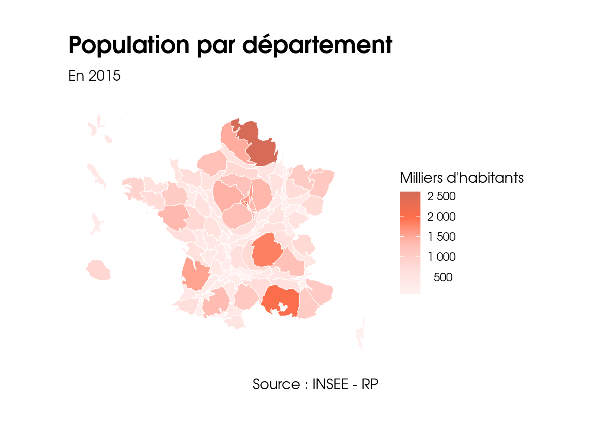
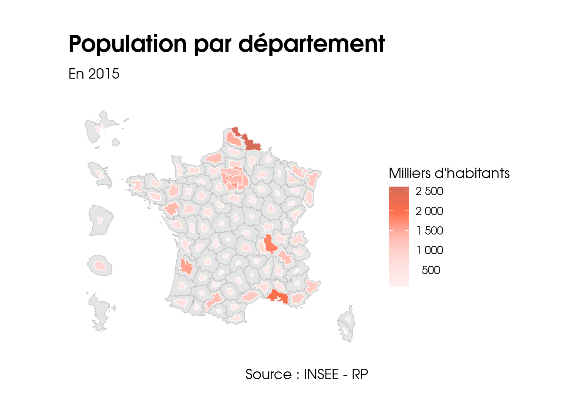
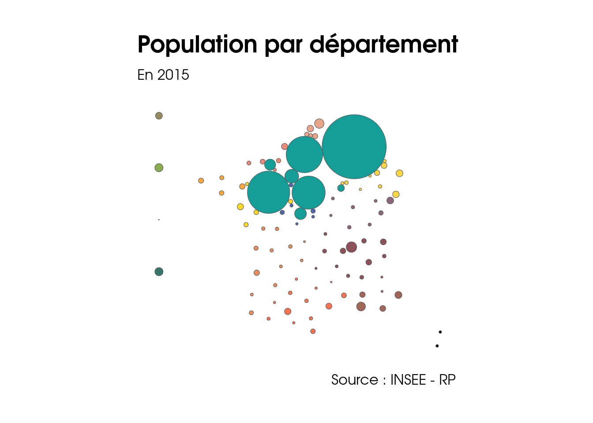

Chapitre 11 Créer des cartogrammes
Un cartogramme est une carte pour laquelle une variable continue définit la surface des territoires représentés. La géométrie de l’espace de la carte est donc déformée afin de se conformer aux informations relatives à cette variable.
Les fonctions du package {cartogramm} permettent de réaliser l’opération de déformation attendue.
La sortie de ces fonctions est un spatial dataframe avec une nouvelle géométrie.
On peut ensuite utiliser cette nouvelle géométrie pour la visualiser avec tout package de cartographie.
Dans ce chapitre nous allons utiliser les packages suivants.
# CRAN
library(cartogram)
library(tidyverse)
# Github
library(COGiter) # remotes::install_github("MaelTheuliere/COGiter")
library(gouvdown) # remotes::install_github("spyrales/gouvdown")Les données utilisées sont issues de {COGiter} :
pop2015_dep_geo <- pop2015 %>%
# mise à jour du COG et agrégation aux différentes échelles adm
cogifier(code_commune = DEPCOM, communes = FALSE, epci = FALSE, departements = TRUE, regions = FALSE, metro = FALSE) %>%
inner_join(COGiter::departements_geo, ., by = c("DEP" = "CodeZone"))11.1 Cartogramme d’aires contigues
On définit la couche à partir de la variable d’une table, ici la population par département.
La fonction cartogram_cont() permet de produire la déformation attendue.
pop2015_dep_cont <- cartogram_cont(pop2015_dep_geo, "pop2015")On peut ensuite utiliser {ggplot2} pour cartographier cette couche.
pop2015_dep_cont %>%
ggplot() +
geom_sf(aes(fill = pop2015 / 1000), color="white", size=.2) +
labs(
title = "Population par département",
subtitle = "En 2015", x = "", y = "",
fill = "Milliers d'habitants",
caption = "Source : INSEE - RP"
) +
scale_fill_gouv_continuous(palette = "pal_gouv_o", reverse = TRUE,
labels = ~format(.x, big.mark = " ", scientific = FALSE))
11.2 Cartogramme d’aire non contigue
La fonction cartogram_ncont() permet de définir la déformation attendue.
pop2015_dep_ncont <- cartogram_ncont(pop2015_dep_geo, "pop2015")ggplot(COGiter::departements_geo) +
geom_sf(color = "grey", size=.4) +
geom_sf(data = pop2015_dep_ncont, aes(fill = pop2015 / 1000), color = "white", size = .4) +
labs(
title = "Population par département",
subtitle = "En 2015", x = "", y = "",
fill = "Milliers d'habitants",
caption = "Source : INSEE - RP"
) +
scale_fill_gouv_continuous(palette = "pal_gouv_o", reverse = TRUE,
labels = ~format(.x, big.mark = " ", scientific = FALSE))
11.3 Cartogramme de Dorling
Le cartogramme de Dorling est une représentation spatiale qui vise à remplacer les polygones par des cercles proportionnels à une variable donnée, en respectant au maximum la position spatiale des polygones.
La fonction cartogram_dorling() permet de définir la géométrie attendue.
On va ici réaliser un cartogramme de dorling sur la densité de population par département 2015.
gdp_dorling <- pop2015_dep_geo %>%
filter(!is.na(AREA)) %>%
mutate(densite = pop2015 / as.numeric(AREA) * 1000000) %>%
left_join(departements, by = "DEP") %>%
cartogram_dorling("densite")gdp_dorling %>%
ggplot() +
geom_sf(aes(fill = REG)) +
labs(
title = "Population par département",
subtitle = "En 2015", x = "", y = "",
caption = "Source : INSEE - RP") +
scale_fill_gouv_discrete(palette = "pal_gouv_qual1", guide = "none")